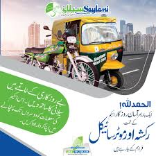
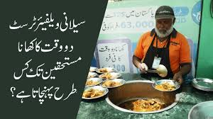
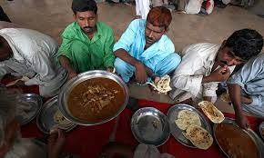
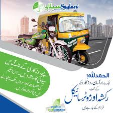
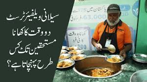
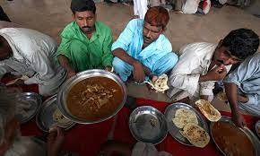

Million's of people life has changed, millions more awaiting your donation
Million's of people life has changed, millions more awaiting your donation
Million's of people life has changed, millions more awaiting your donation
Million's of people life has changed, millions more awaiting your donation

Saylani Welfare International Trust is a non-government organization (NGO) focusing primarily on feeding the poor and homeless. It was established in May 1999 and is headquartered at Bahdurabad, Karachi, Pakistan.[1] It was founded and headed by spiritual and religious scholar Maulana Bashir Farooq Qadri.[2][3] With an estimated monthly expenditure of Pakistani Rupees above 30 million, Saylani Trust provides food twice a day to more than 30,000 poor people through its 100 centers (generally known as Dastar-Khawan), most of them are serving in Karachi.[4][5] The organization distributed CNG rickshaws among the jobless citizens of Karachi in April 2011 with the help of members of the Karachi business community.[6]
Charitable initiatives Saylani, since its inception, has worked on both providing needed economic and nutritional help to the needy in distress as well as providing means for able-bodied persons to earn a living through innovative solutions to "tackle the root causes and effects of poverty of Pakistani citizens." This ranges anywhere from programs similar to those provided by Social Security in Western nations to doing area to area and neighborhood to neighborhood searches of the needy and providing relief.[7] Notable among these programs are:
Economic empowerment In 2013, in an effort to create economic empowerment via training in Technology, especially Web and Mobile App development, Saylani Welfare International Trust began its Saylani Mass IT Training (SMIT) Program under the guidance of Zia Ullah Khan,[11] who have previously run successful mass IT programs like “Operation Badar”.[12] The goal of SMIT was to create 10,000 well-trained Web and Mobile App developers in emerging programming languages like React, Node JS, and Angular JS.[13] The program thus far has trained 4,000 developers successfully in fields as varied as Cisco’s CCNA certification, Graphic Design, and Startup Entrepreneurship along with the Web and Mobile App development skills to spur economic empowerment and allow its graduates to quickly become economically independent.[14]
Aid to Syrian and Rohingya refugees In 2017, Saylani Welfare Trust confirmed that they were providing food aid to Syrian refugees on Turkey's border with Syria. The Chief Operating Officer of Saylani, Muhammad Ghazal, said that they are working in partnership with the Turkish Disaster and Emergency Management Authority (AFAD) to provide aid to Syrian living in refugee camps near the border.[15]
125,000
DAILY DASTRAKHAN(MONTHLY)
7,500
FAMILY ADOPTION(MONTHLY)
43,749
MEDICAL(MONTHLY)
180,000
EDUCATION(MONTHLY)
Online Sadqah
Welfare
Medical
Dastarkhawn
Ro Plant
EDUCATION
 





Head Office
A-25 /Bahadurabad chowrangi Karachi Pakistan
 UAN: 111-729-526
UAN: 111-729-526
CELL: 92-311-1729526
USA NO +1(716)941 7792
UK NUM (+44)115 970 6256
info@saylaniwelfare.com